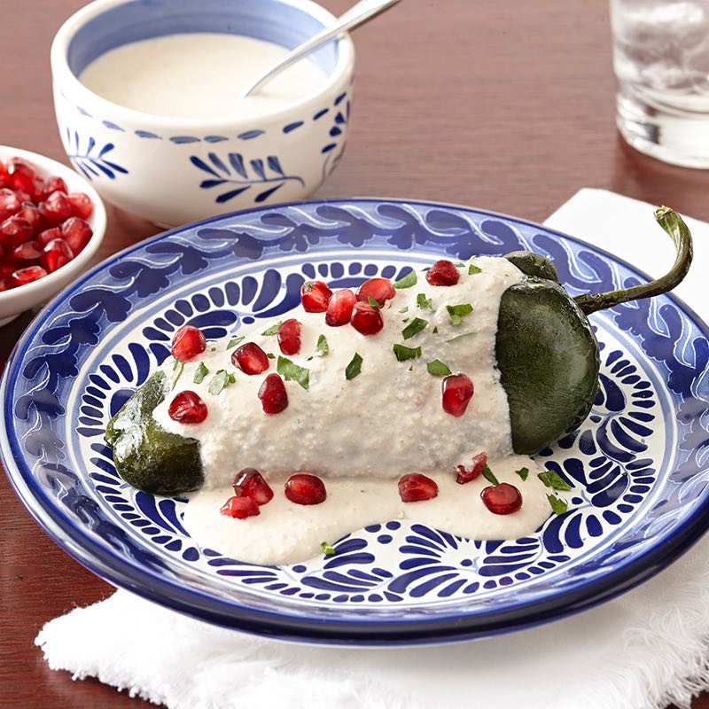

Ejercicio 1
México

México es un país conocido por sus playas y su diverso ecosistema.
Tacos
El taco es una tortilla rellena con cualquier otro tipo de alimento.
 Chiles en Nogada
Chiles en Nogada
Este es un chile poblano relleno de picadillo; y está cubierta de una crema con nuez, perejil y granos de granada.
